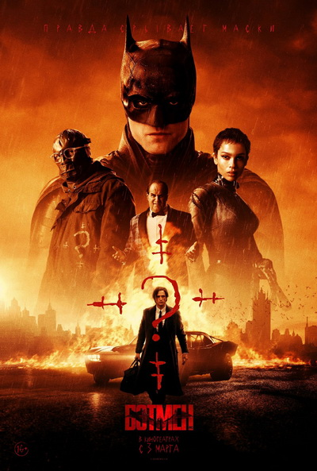
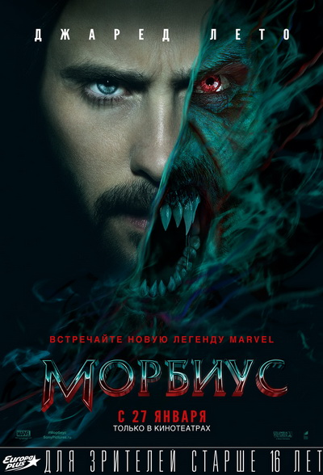
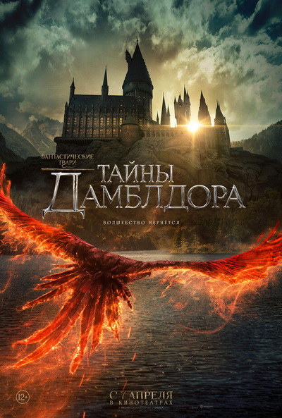

Смерть на Ниле (2022)
На этот раз необходимость расследовать загадочное убийство,
отвлекаясь от собственного отдыха, настигает Пуаро на борту роскошного круизного парохода,
следующего вдоль по Нилу
Читать дальше

Бэтмен (2022)
Ставший Темным Рыцарем – легендарным защитником Готэма – Брюс Уэйн
продолжает разбираться не только с врагами своего города, но и со своей ролью, которую он для себя избрал
Читать дальше
Доктор Стрэндж 2: В мультивселенной безумия (2022)
После событий «Мстителей: Финал», «ВандаВижен», «Локи» и «Человек-паук:
Нет пути домой» доктор Стивен Стрэндж продолжает поиски Камня времени и исправление последствий
освобождения Мультивселенной, но ему мешает друг, ставший врагом, в результате чего Стрэндж
высвобождает невообразимое зло
Читать дальше

Морбиус (2022)
Чтобы излечиться от редкого заболевания крови, доктор Майкл Морбиус
соглашается на участие в опасном эксперименте, в результате которого становится вампиром
Читать дальше
King’s man: Начало” (2022)
Самые ужасные в истории тираны и криминальные гении собираются вместе,
чтобы развязать войну и уничтожить миллионы людей. Но есть один человек, который при помощи
своего сына, соратников и личного стиля готов принять вызов и остановить злодеев
Читать дальше

Фантастические твари 3: Тайны Дамблдора” (2022)
Профессор Альбус Дамблдор узнает, что могущественный темный волшебник Геллерт
Грин-де-Вальд планирует захватить власть над миром. Понимая, что не сможет остановить его в одиночку,
Дамблдор просит магозоолога Ньюта Саламандера возглавить команду из выдающихся волшебников и одного
отважного магла-пекаря. Им предстоят невероятно опасные приключения, встреча со старыми и укрощение
новых магических существ и борьба со сторонниками Грин-де-Вальда, которых становится все больше. Но
какая роль в этой миссии уготована самому Дамблдору?
Читать дальше